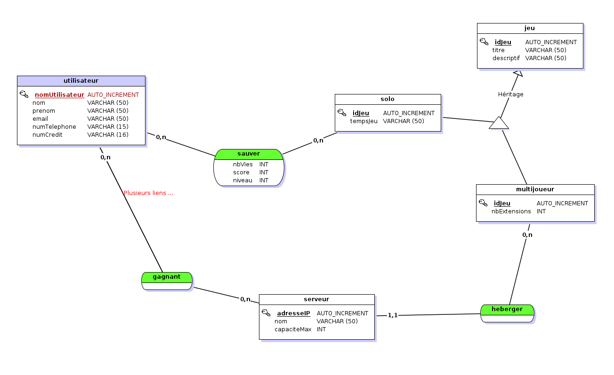

Bases de données · SQL
Conception de bases de données
Conception de bases de données à partir de différents cas d’entreprise, avec modélisation et écriture de requêtes SQL.

Description
Les travaux partent de besoins décrits dans un contexte d'entreprise pour aboutir à une structure de base de données cohérente.
J'ai réalisé les modèles nécessaires puis écrit des scripts SQL pour créer et exploiter les données.
Travail réalisé
- Analyse du besoin
- MCT et MCD
- Passage au MLD
- Création des tables et contraintes
- Requêtes SQL
- Vérification de la cohérence des données
Apprentissages critiques mobilisés
Ces apprentissages critiques sont ceux que je peux illustrer à travers ce projet. Ils sont également reliés aux autres projets dans la page Compétences.
Conception d’une base relationnelle à partir d’un besoin.
Écriture de requêtes SQL pour exploiter les données.
Réflexion sur la structure et la cohérence du modèle.
Preuve de progression
Je connaissais les notions de tables et de requêtes simples.
J'ai progressé vers une conception plus complète, en passant par l'analyse du besoin, les modèles MCD/MLD et les contraintes SQL.
Mobiliser ces connaissances dans un projet concret, expliquer mes choix techniques et produire une solution fonctionnelle adaptée au problème posé.